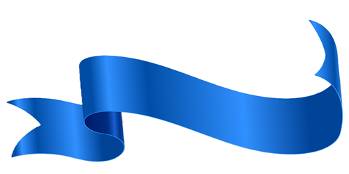

~~ IV ~~
Si telegrafías al porvenir te sale una moradura. Te lo aseguro. Lo hice una vez, por probar si era cierto, y no me gustó la experiencia.
Era de muchos colores y me salió en un brazo. La primera semana no caminé mucho, no fuera a dolerme con el frío. Pero a la segunda semana, después de ver a un colibrí me lo pensé mejor y la tapé con una cinta azul.
Hace mucho tiempo de eso y desconozco si la moradura sigue en mi brazo. Nunca me quité la cinta azul porque me gusta mucho cómo me queda en el brazo.
Ahora estoy pensando ponerme otra en el otro brazo, pero no se me ocurre ningún color cuando pienso en el cinco. Con el siete no me pasa y todo es un poco más fácil. Además nunca me tropiezo. Pero los colores se me escapan si pienso en el cinco. No sé a dónde van, nunca me lo dicen; el siete tampoco. Pero como no quiero que piensen que soy un pesado, nunca insisto demasiado preguntando. Un dos rojo enfadado es insufrible; yo al menos no lo puedo soportar y todo el mundo sabe que, a mí, no me gusta el amarillo.
Creo que me voy a quedar toda la noche pensando en si la moradura sigue en mi brazo. Y si me canso y me pongo amarillo me cambiaré de lugar, que no hay nada peor que el que piensen de ti que eres un pesado; sobre todo los números (aunque los impares son menos quisquillosos).
Voy a abrir la ventana para ver cómo pasa la noche. A lo mejor así se me ocurre algún color.
Aunque no lo creo.
Fin.